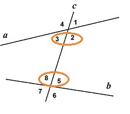

Углы при пересекающихся прямых
Две
прямые называются пересекающимися, если они имеют
одну и только одну общую точку.

Секущей по отношению к двум данным
прямым называется
прямая,
пересекающая
данные прямые
(прямая с).

При пересечении двух
прямых, лежащих в одной плоскости,
третьей прямой, образуется восемь углов:

-
соответственные углы,: ∠ 1 и ∠ 5,
∠ 2 и ∠ 6, ∠ 3 и ∠ 7, ∠ 4 и ∠ 8;
-
внутренние односторонние: ∠ 2 и ∠ 5, ∠ 3 и ∠ 8;
-
внешние односторонние: ∠ 1 и ∠ 6, ∠ 4 и ∠ 7;
-
внутренние накрест лежащие: ∠ 2 и ∠ 8, ∠ 3 и ∠ 5;
-
внешние накрест лежащие: ∠ 1 и ∠ 7, ∠ 4 и ∠ 6;
Свойства углов и пересекающихся
прямых:
-
Если при пересечении двух прямых, лежащих в одной плоскости, третьей прямой
соответственные углы одной пары (например, углы 1 и 5) равны, то соответственные
углы всех других пар (т.е углы 2 и 6, 4 и 8, 3 и 7) тоже равны.

-
Если при пересечение двух прямых, лежащих в одной плоскости, третьей прямой внутренние
(или внешние) накрест лежащие углы одной пары (например, углы 2 и 8) равны, то
внутренние (или внешние) накрест лежащие углы другой пары (т.е. углы 3 и 5)
тоже равны.

-
Если при пересечении двух прямых, лежащих в одной плоскости, третьей прямой,
соответственные углы равны, то сумма каждой пары односторонних углов равна 180°.

-
Если при пересечении двух прямых, лежащих в одной плоскости, третьей прямой,
сумма пары односторонних углов равна 180°, то соответственные углы
равны.
-
Если при пересечении двух прямых, лежащих в одной плоскости, третьей прямой,
внутренние (или внешние) накрест лежащие углы равны, то сумма каждой пары
односторонних углов равна 180°.

-
Если при пересечении двух прямых, лежащих в одной плоскости,
третьей прямой, сумма пары внутренних односторонних углов
равна 180°, то накрест лежащие углы равны.
